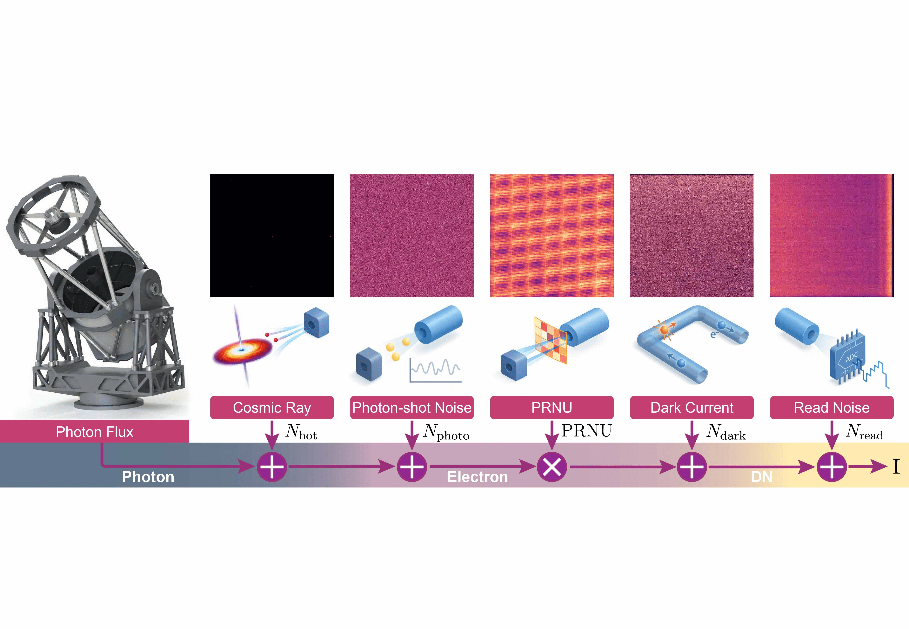
* denotes equal contribution. # denotes corresponding author. See also my Google Scholar.
2026
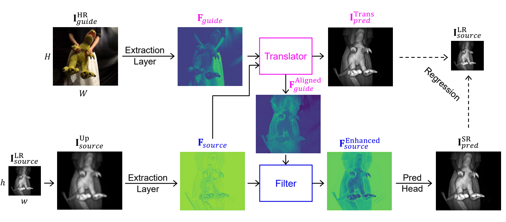
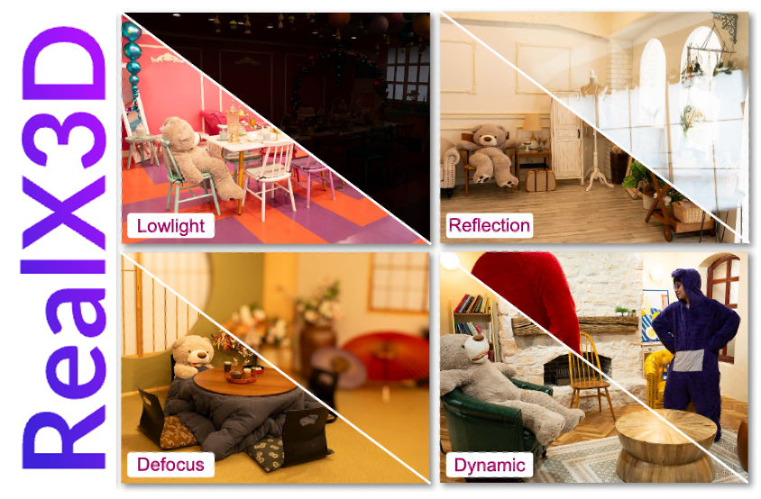
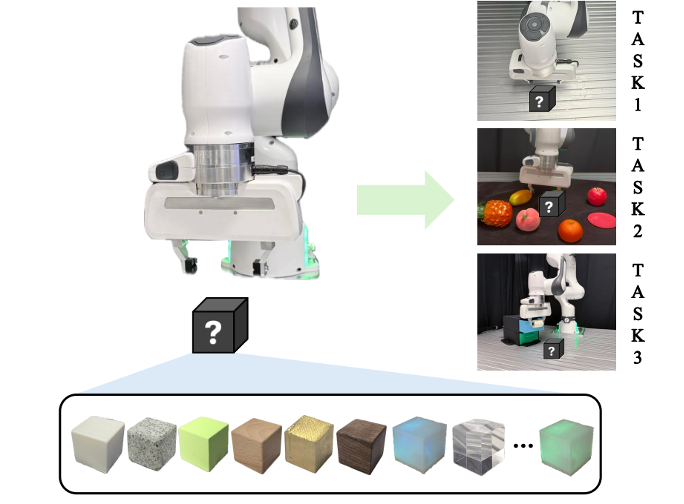
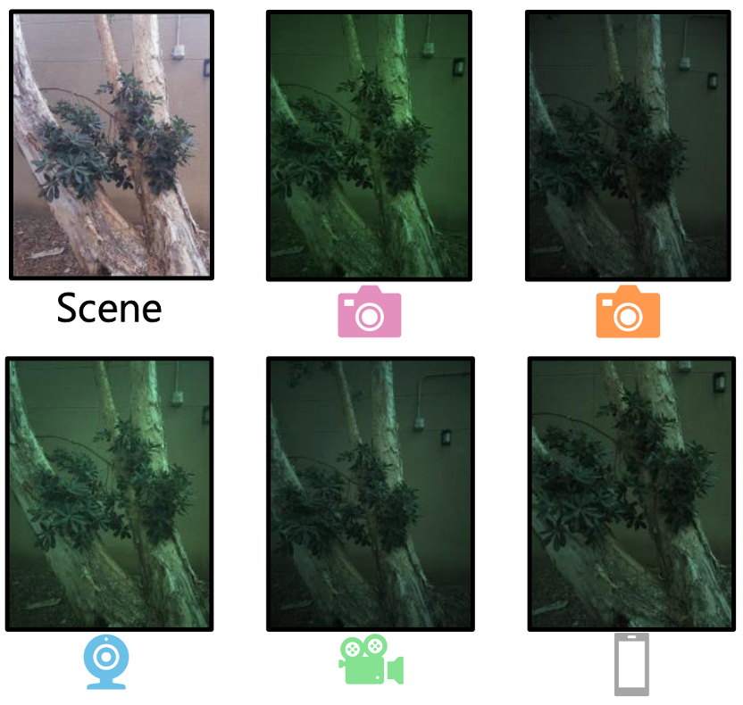
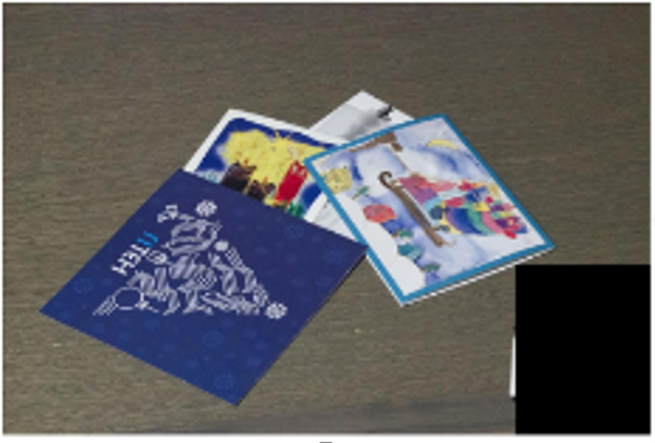
2025
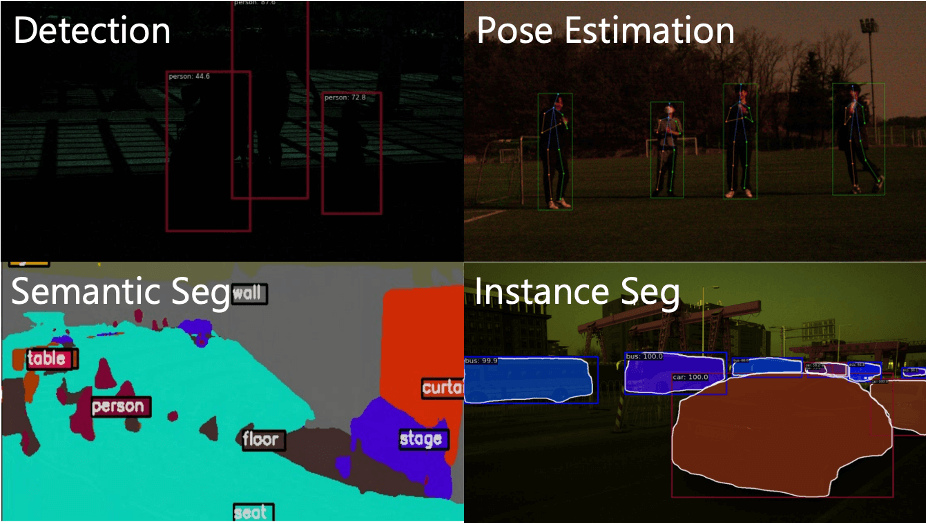
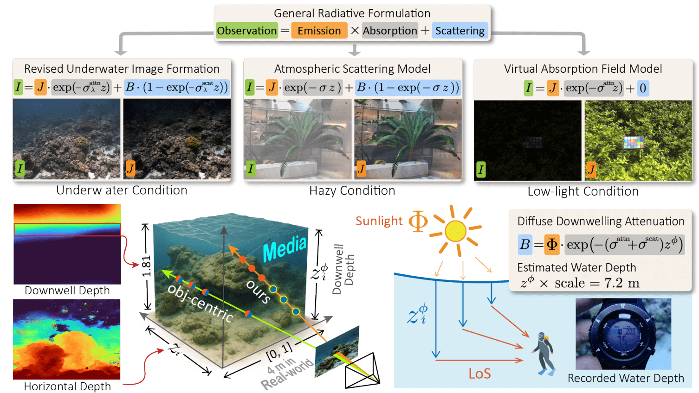
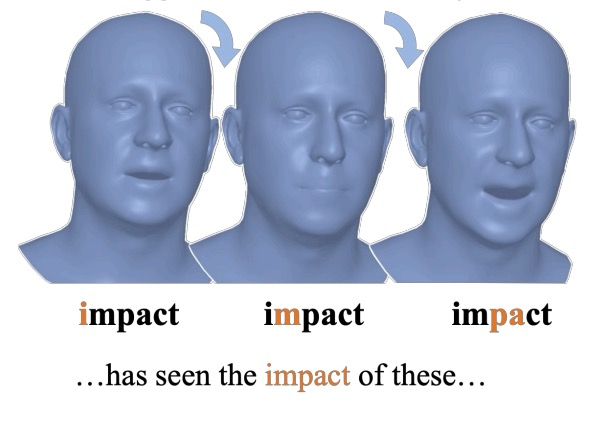
ARTalk: Speech-Driven 3D Head Animation via Autoregressive Model
SIGGRAPH Asia 2025
2024
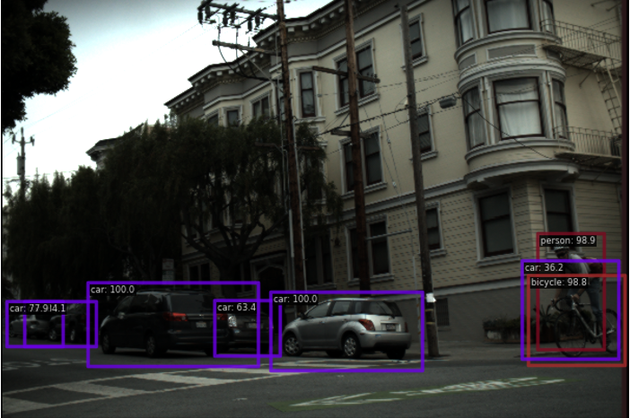
RAW-Adapter: Adapting Pre-trained Visual Model to Camera RAW Images
ECCV 2024 · extended in TPAMI 2026 (with Jianfei Yang, Tatsuya Harada#)
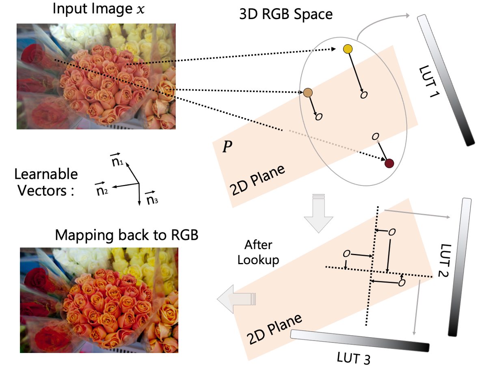
2023
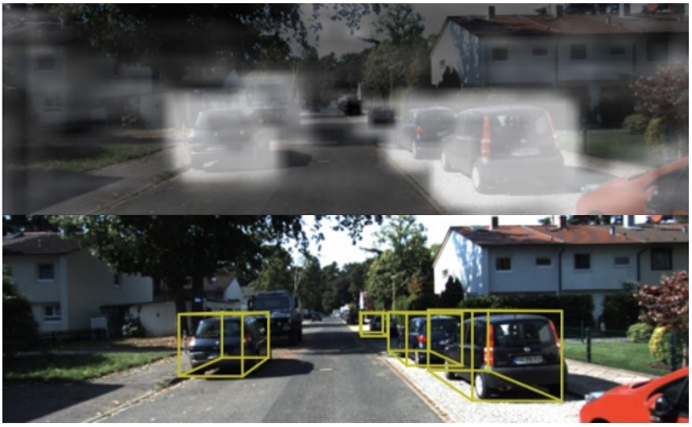
2022
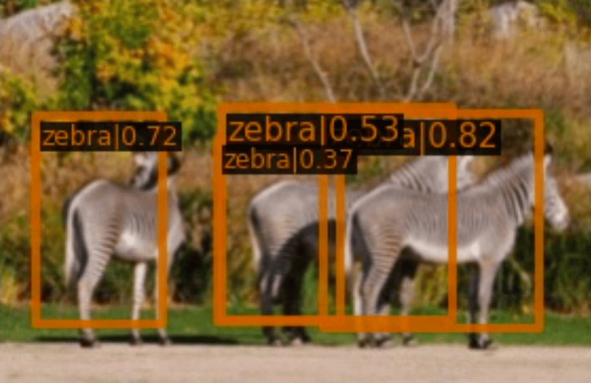
2021
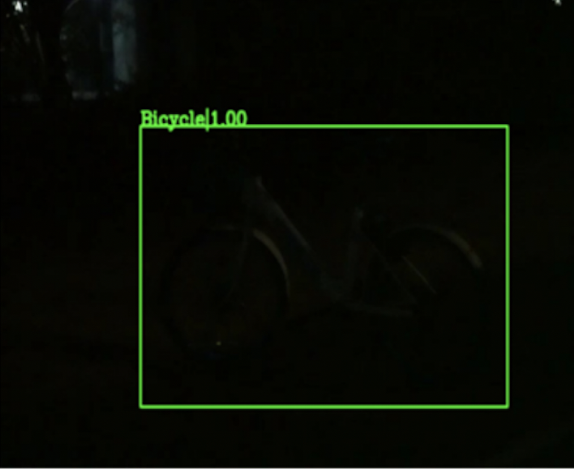